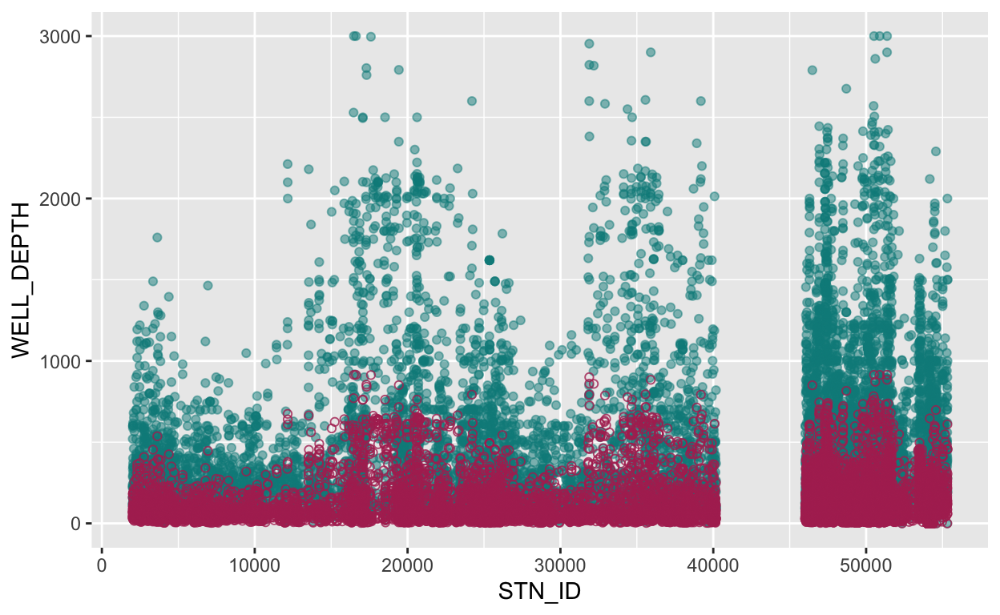
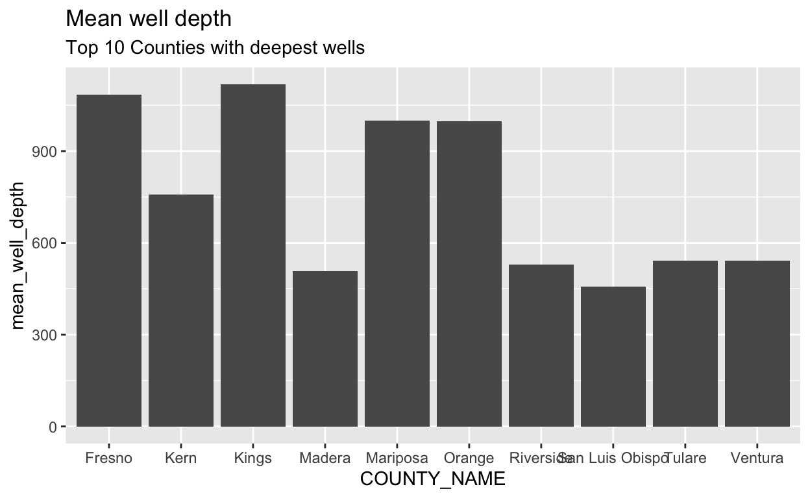
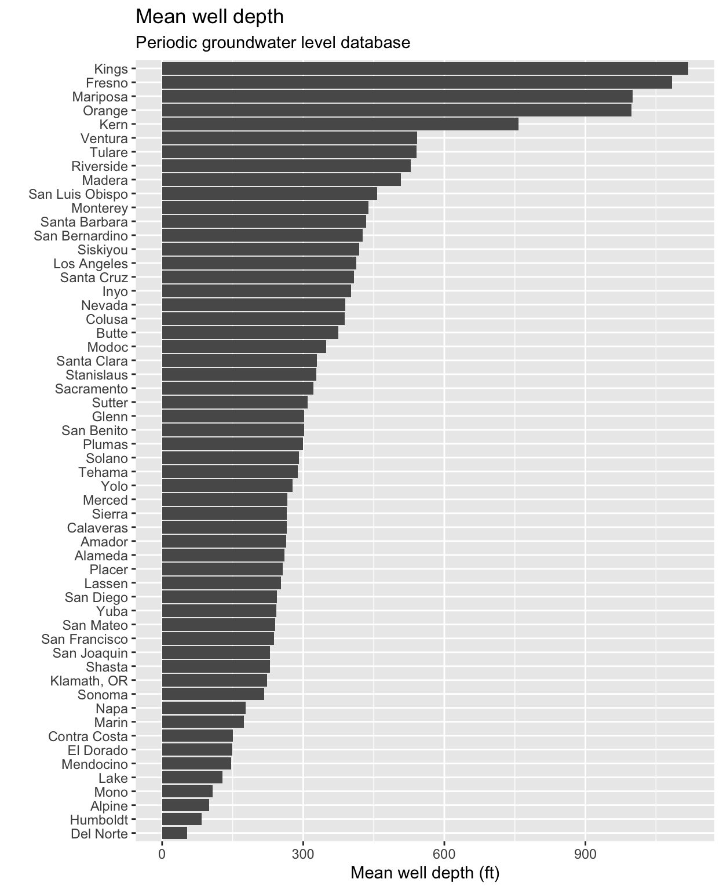
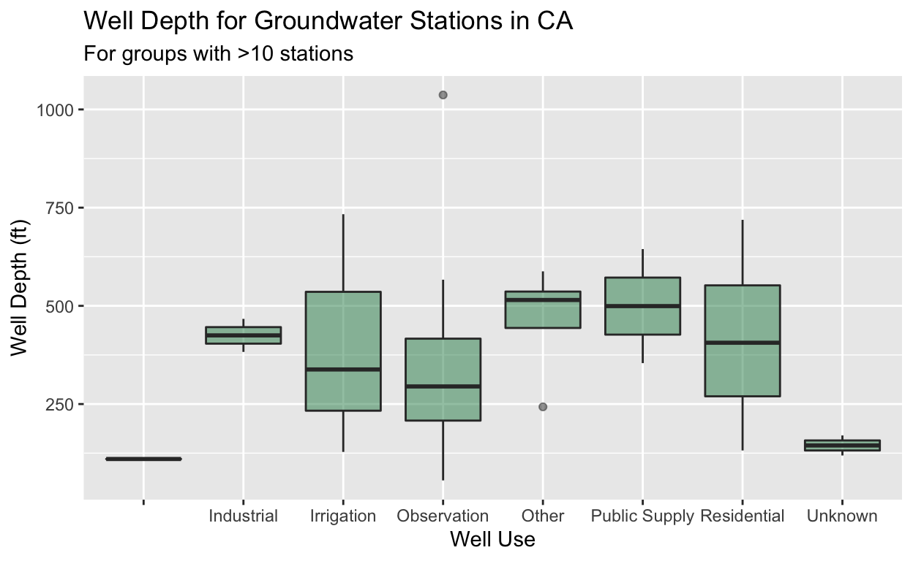
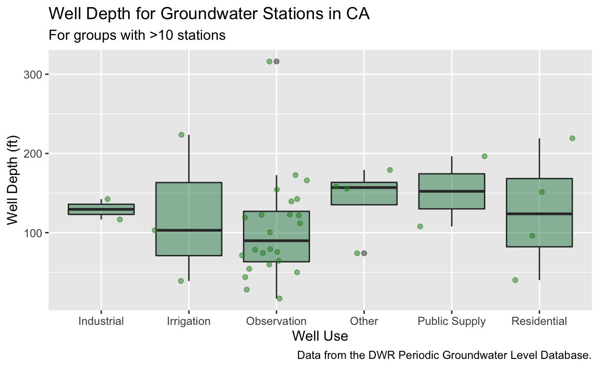

Learning objectives
- Learn how to approach tidying and transforming datasets
- Understand how to use the pipe (
%>%) to chain operations together - Learn the core
{dplyr}tools including functions (select,filter,group_by,summarize)
Data wrangling with {dplyr}
Data wrangling is usually the part of any data analysis project that takes the most time. Although it may not necessarily be fun, it is foundational to all the work that follows. Often, data wrangling also takes significantly longer than actually performing the data analysis or creating a data visualization, so do not panic if, in the future, you find yourself spending a lot of time on this phase. Once you learn some core approaches and tools, you can deal with nearly any dataset you may face!

Figure 1: Illustration by @allison_horst, from Hadley Wickham’s talk “The Joy of Functional Programming (for Data Science)”
The data wrangling process includes data import, tidying, and transformation. The process directly feeds into the understanding or modeling side of data exploration, but in a iterative way. More generally, data wrangling is the manipulation or combination of datasets for the purpose of analysis, and often you have to rinse and repeat this process as your understanding of the data changes, and as your modeling and visualization needs also changes.

Figure 2: Image from “R for Data Science” by Garrett Grolemund and Hadley Wickham.
Have an Objective
All data wrangling is based on a purpose.
No one wrangles for the sake of wrangling (usually), so the process always begins by answering the following two questions:
- What do my input data look like?
- What should my output data look like given what I want to do?
Learn some Core Tools for Common Operations
At the most basic level, going from what your data looks like to what you want it look like will require a few key operations. The more we practice these operations with common tools, the easier this will be no matter the size or complexity of data that we face.

Figure 3: Illustrations from the Openscapes blog Tidy Data for reproducibility, efficiency, and collaboration by Julia Lowndes and Allison Horst.
Common operations that occur during data wrangling:
selectspecific variablesfilterobservations by some criteria- Add or modify (
mutate) existing variables renamevariablesarrangerows by a variablesummarizea variable conditional on others
The {dplyr} package provides easy tools for these common data manipulation tasks and is a core package from the {tidyverse} suite of packages. The philosophy of {dplyr} is that one function does one thing and the name of the function says what it does.
Start from Scratch
Any reproducible analysis should be easily repeated. Using code in a script allows us to rebuild every step of the data analysis from scratch – from data import, to data wrangling, to visualization and modeling – sometimes over and over again. For that reason, it’s a good habit to Restart your R Session before you begin a new coding adventure. Sometimes this solves issues, sometimes it’s just good to make sure everything runs up to the point you are working. Let’s do that now!
- Go to
Session>Restart R! - Check your
Environmenttab…it should be empty!
Import Libraries and Data
First we need to load the libraries that we’ll be using. Let’s use {here} and the {tidyverse} packages (which includes {dplyr} and {ggplot2}).
Next we import a .csv of groundwater monitoring stations across California1.
Below your code that imports the dataset, let’s make a new section! Go to Code > Insert Section, and type your new section header Wrangling Data. We can also use keyboard shortcuts for this (Ctrl or ⌘ + Shift + R). You should notice how this now appears in an expandable table of contents on the right hand side of your script pane (look for the tiny button that has little gray horizontal lines on it). This feature can be very helpful in keeping you and your scripts organized.
filter rows
One of the most common steps to slicing data is to filter rows of a dataframe. We can filter by a variable (e.g., column name) or by a condition (i.e., only values greater than 100). Remember, {dplyr} is designed so that one function does one thing, and the name of the function says what it does.

Figure 4: Artwork by @allison_horst
Let’s filter this large dataframe of potential groundwater station locations (n=43807 total!) to just stations from Sacramento County with filter().
What happened? filter() requires the data, and then any number of filtering options. We provided just one. Here the == means “equal to”, while a single = would mean is.
We can also combine filter conditions in the same call! Let’s add another condition that we only want Residential wells (a category of the WELL_USE column). We can get a count of how many categories of WELL_USE have observations (or rows) in the stations_sac dataframe using the table() function. Then we can combine multiple conditions in our filter with a , (in filter, commas are another way to say AND).
# get what the categories of WELL_USE are in Sacramento County:
table(stations_sac$WELL_USE)
Industrial Irrigation Observation Other
8 2 144 90 101
Residential Stockwatering Unknown
76 6 67 # combine conditions with "," which is equivalent to AND
stations_sac <- filter(stations, COUNTY_NAME == "Sacramento", WELL_USE == "Residential")
nrow(stations_sac)
[1] 76We can mix and match filter conditions however we choose. What if we want to select multiple counties? The %in% is a great way to provide a list of things you want filter to use to see if there’s a match within your dataframe. Let’s filter to 3 counties: Sacramento, Placer, and El Dorado.
What happened? We used a list (using the c() to combine different possible values of COUNTY_NAME) to specify what data we wanted to keep, and we told filter to return all rows in the COUNTY_NAME column with entries in (%in%) that list of county names (sep_counties).
Exclude rows
We can also exclude rows based on conditions. To exclude, we can negate a condition with the ! symbol in front of the condition. Let’s exclude all stations from Yolo County. Here we show 3 ways to to do the same thing.
select columns
We can also select specific columns or variables of interest with the select() function. Similar to filter, we pass the data, and the conditions we want to use to subset our data. Let’s select only STN_ID, LATITUDE, LONGITUDE, and COUNTY_NAME.
# select specific columns to keep
stations_sel1 <- select(stations, c(STN_ID, LATITUDE, LONGITUDE, COUNTY_NAME))
names(stations_sel1) # names of columns
[1] "STN_ID" "LATITUDE" "LONGITUDE" "COUNTY_NAME"Remember we don’t have to quote the variable names here! What if we want to just remove a column? We can use the same structure, but put a “-” in front of our list or condition.
# select columns to drop
stations_sel2 <- select(stations, -c(LATITUDE:BASIN_NAME, COUNTY_NAME))
ncol(stations_sel2) # how many columns?
[1] 8Here we used the : to say columns from LATITUDE through BASIN_NAME, then we included COUNTY_NAME in the list of columns to drop.
There are some very powerful options that exist within select(), including the ability to rename columns, or select by things that relate to the column names. Let’s select columns that start with “W” or contain “NAME”.
# select columns to drop
stations_sel3 <- select(stations, starts_with("W"), contains("NAME"))
names(stations_sel3)
[1] "WELL_NAME" "WLM_METHOD" "WLM_ACC" "WELL_DEPTH"
[5] "WELL_USE" "WELL_TYPE" "WCR_NO" "BASIN_NAME"
[9] "COUNTY_NAME"The Pipe ( %>% )
We now have two ways to slice and dice our data, filter rows and select by columns. A very useful tool you may have seen is something called a “pipe”. In R, this is represented by the symbol %>% and can be inserted with the keyboard shortcut Ctrl or ⌘ + Shift + M.
The pipe is a way to chain multiple commands together, and it passes the result of the first function to the second function This is particularly helpful in R when you don’t need to (or want to) assign temporary steps to your code. For example, compare a filter, select, and rename set of operations with and without the %>%.
# filter
stations_multcounty1 <- filter(stations, COUNTY_NAME %in%
c("Sacramento", "Placer"))
# select
stations_multcounty2 <- select(stations_multcounty1, starts_with("W"),
contains("NAME"), contains("ID"))
# rename the STN_ID to station_id: rename(new_col_name, old_col_name)
stations_multcounty3 <- rename(stations_multcounty2, station_id = STN_ID)
Now let’s rewrite the code above with %>%. Notice we don’t need to explicitly define intermediate variables for each step, because data is “piped” between steps.
We piped (%>%) the data to filter(), and the result of the filter() to select(), and then piped the result of that to rename(). Since we assigned all of this at the very beginning to stations_multcounty, that’s our final output.
Challenge 1: You Try!
- Using the
stationsdataset, filter to onlyResidentialwells that have aWELL_DEPTH > 1000feet.
- Select only
STN_ID,WELL_DEPTH,WELL_NAME,BASIN_NAME, andCOUNTY_NAMEcolumns in the dataframe. - How many records are in Los Angeles?
Click for Answers!
# filter and select
challenge1 <- stations %>%
filter(WELL_USE == "Residential", WELL_DEPTH > 1000) %>%
select(STN_ID, WELL_DEPTH, ends_with("NAME"))
names(challenge1)
[1] "STN_ID" "WELL_DEPTH" "WELL_NAME" "BASIN_NAME"
[5] "COUNTY_NAME"# count the number of rows for each unique value of COUNTY_NAME
table(challenge1$COUNTY_NAME)
Los Angeles Riverside San Bernardino Siskiyou
5 3 12 2
Tulare Ventura
1 3 mutate existing data
mutate is a function that modifies existing data, either by adding a new column, or modifying existing columns. When using mutate we expect R to return some modified version of our input dataframe… but it should still be a version of the original dataframe.

Figure 5: Artwork by @allison_horst
mutate allows us to pass other functions or data into our dataframe, and is a powerful way to clean and tidy our data.
Let’s create a new WELL_DEPTH_m column which converts the existing WELL_DEPTH column from feet to meters. We pass the new column name and then the function or operation we want to preform to create the new column (or modify an existing column).
stations_mutate1 <- stations %>%
mutate(WELL_DEPTH_m = WELL_DEPTH * 0.3048)
Let’s use ggplot2 to check and see if this worked. We can use the %>% here too!
stations_mutate1 %>%
# pass stations_mutate1 into the ggplot function
ggplot() +
# add a point geom in feet
geom_point(aes(x = STN_ID, y = WELL_DEPTH), color = "cyan4", alpha = 0.5) +
# add a point geom in meters
geom_point(aes(x = STN_ID, y = WELL_DEPTH_m), color = "maroon", pch = 21, alpha = 0.8)

As shown above, the reddish circles for observations in units of meters indicate smaller values than the blueish circles for observations in units of feet. This looks about right! It is rarely a bad idea to “visualize” your outcomes whenever possible, these are great ways to double check things are happening as you intend when data wrangling.
Extra Practice
Let’s pause a moment and do this in base R without the tidyverse so we can see both methods. There are many positives about knowing different approaches, and also when troubleshooting, it can be helpful to understand different ways of doing the same thing. Can you spot a few differences?
# filter and select (subset)
stations_basefilter <- stations[stations$WELL_USE == "Residential" &
stations$WELL_DEPTH > 1000,
c(1, 4, grep("NAME", colnames(stations)))]
# mutate
stations_base1 <- stations # make a copy so we don't alter original data
stations_base1$WELL_DEPTH_m <- stations_base1$WELL_DEPTH * 0.3048
# ggplot
ggplot(data = stations_base1) +
geom_point(aes(x = STN_ID, y = WELL_DEPTH),
color = "cyan4", alpha = 0.5) +
# this in meters
geom_point(aes(x = STN_ID, y = WELL_DEPTH_m),
color = "maroon", pch = 21, alpha = 0.8)
group_by & summarize
The final core {dplyr} “verbs” to be aware of are group_by and summarize. These are really useful to transform your data into an entirely new dataset, and to do many operations at once based on different columns (variables) within your dataset.
For example let’s say we want a count of how many records exist for each county. We can use group_by and count.
n_by_county <- stations %>%
group_by(COUNTY_NAME) %>%
count()
head(n_by_county)
# A tibble: 6 x 2
# Groups: COUNTY_NAME [6]
COUNTY_NAME n
<chr> <int>
1 Alameda 237
2 Alpine 33
3 Amador 11
4 Butte 302
5 Calaveras 17
6 Colusa 229What happened? group_by() groups the data based on the variable(s) included in the function. Once our data.frame is grouped, there are many options and functions we can apply, including things like count(), tally(), and summarize().
Let’s look at this a bit more. What if we really only want the 5 counties with the most observations? We can add two additional options here. The arrange() function will sort our data by a variable(s) of our choice, and we can use desc() to specify we want that data in descending order. We then pipe that to head() and ask for just the first 5 rows.
stations %>%
group_by(COUNTY_NAME) %>%
count() %>% # count by COUNTY_NAME
arrange(desc(n)) %>% # sort by column n in descending order
head(5) # return the first 5 rows
# A tibble: 5 x 2
# Groups: COUNTY_NAME [5]
COUNTY_NAME n
<chr> <int>
1 Fresno 6053
2 San Bernardino 5837
3 Kern 5155
4 Riverside 2636
5 Merced 2479Summarizing Data
Similar to mutate, summarize allows us to create new columns. The difference is summarize creates a completely new dataframe based on the group_by. Thus, summarize always follows a group_by. Here we can do a similar analysis to what we did above, but now we can customize our columns and what we want to calculate. Let’s calculate the average depth of wells in all counties, then plot the top 10 counties with the deepest average well depth.
stations %>%
group_by(COUNTY_NAME) %>%
summarize(mean_well_depth = mean(WELL_DEPTH, na.rm = TRUE)) %>%
arrange(desc(mean_well_depth)) %>%
head(10) %>% # return the first 5 rows and pass to ggplot
ggplot() +
geom_col(aes(x = COUNTY_NAME, y = mean_well_depth)) +
labs(title = "Mean well depth",
subtitle = "Top 10 Counties with deepest wells")

We looked at only the top 10 counties before, but remember that group_by and summarize work on entire dataframes. To illustrate how these operations scale to entire dataframes, if we wanted to visualize the mean well depth for all counties in the data, we could do so with slightly modified code:
stations %>%
# group by the county name
group_by(COUNTY_NAME) %>%
# calculate the mean well depth
summarize(mean_well_depth = mean(WELL_DEPTH, na.rm = TRUE)) %>%
# remove two counties that have NA values
filter(!is.na(mean_well_depth)) %>%
# pass to ggplot
ggplot() +
geom_col(aes(x = fct_reorder(COUNTY_NAME, mean_well_depth),
y = mean_well_depth)) +
labs(title = "Mean well depth",
subtitle = "Periodic groundwater level database",
y = "Mean well depth (ft)",
x = "") +
coord_flip()

We can add additional groups or columns depending on what we are interested in. Let’s try the following:
- find the mean well depth by each
WELL_USEcategory usingsummarize filterto only groups that have more than 10 stations and no NA’s (for NA’s, we can use theis.na()function, and the negate or!symbol we used previously)- pipe to ggplot and make a boxplot to visualize the result
stations %>%
group_by(COUNTY_NAME, WELL_USE) %>%
summarize(mean_well_depth = mean(WELL_DEPTH),
total_records = n()) %>%
filter(total_records > 10, !is.na(mean_well_depth)) %>%
ggplot() +
geom_boxplot(aes(x = WELL_USE, y = mean_well_depth),
fill = "seagreen", alpha = 0.5) +
labs(title = "Well Depth for Groundwater Stations in CA",
subtitle = "For groups with >10 stations",
x = "Well Use",
y = "Well Depth (ft)")

What happened? We grouped by two different variables, and then applied functions (or transformed the data) to those groups using summarize, then we filtered, and visualized. The order of these steps can influence your analysis and result, so it’s good to consider when you want to filter and when you want to group_by/summarize things. Let’s try a challenge!
Challenge 2: You Try!
- Using the code we ran above, figure out how to make this boxplot without the “
Unknown” and blank ("")WELL_USEcategories. - Try adding points as another layer over your boxplot using
geom_jitter. - For a bonus challenge, try adding a caption with information about this dataset, and plotting these data in meters instead of feet.
Click for Answers!
stations %>%
filter(WELL_USE != "", WELL_USE != "Unknown") %>%
group_by(COUNTY_NAME, WELL_USE) %>%
summarize(mean_well_depth = mean(WELL_DEPTH),
mean_well_depth_m = mean_well_depth * 0.3048,
total_records = n()) %>%
filter(total_records > 10, !is.na(mean_well_depth_m)) %>%
ggplot() +
geom_boxplot(aes(x = WELL_USE, y = mean_well_depth_m),
fill = "seagreen", alpha = 0.5) +
# add jittered points
geom_jitter(aes(x = WELL_USE, y = mean_well_depth_m),
color = "forestgreen", alpha = 0.5) +
# add labels and caption
labs(title = "Well Depth for Groundwater Stations in CA",
subtitle = "For groups with >10 stations",
caption = "Data from the DWR Periodic Groundwater Level Database.",
x = "Well Use",
y = "Well Depth (ft)")

Remember to ungroup
A common blunder that can impact downstream analyses, or even the current analysis you may want to do is forgetting to ungroup. {dplyr} is smart, and will do exactly as you program it to do, but when you use group_by, your output dataframe will retain those groups for future use. This can be helpful in some cases, but it’s important to keep an eye on and be aware of (for when it’s not helpful). We can always use class() to better check this. Let’s try some code from above and check with class().
stations_by_cnty_use <- stations %>%
filter(WELL_USE != "", WELL_USE != "Unknown") %>%
group_by(COUNTY_NAME, WELL_USE) %>%
summarize(mean_well_depth = mean(WELL_DEPTH),
total_records = n()) %>%
filter(total_records > 10, !is.na(mean_well_depth))
class(stations_by_cnty_use)
[1] "grouped_df" "tbl_df" "tbl" "data.frame"Here we can see the grouped_df title, which tells us this is a grouped dataset. We can easily ungroup with the concisely named ungroup() function. This isn’t required, but it’s a good habit to get into (or be aware of).
stations_by_cnty_use <- ungroup(stations_by_cnty_use)
class(stations_by_cnty_use)
[1] "tbl_df" "tbl" "data.frame"Congratulations! You’ve made it through {dplyr}. There are many more great options and tricks within {dplyr}, but hopefully this will get you going.
Previous module:
6. Data Structures Next module:
8. Spreadsheets & Pivots